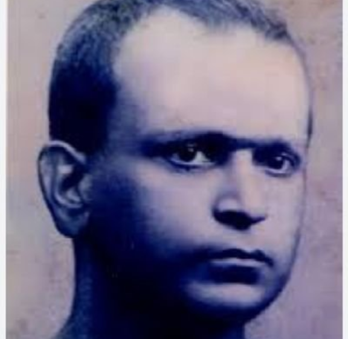
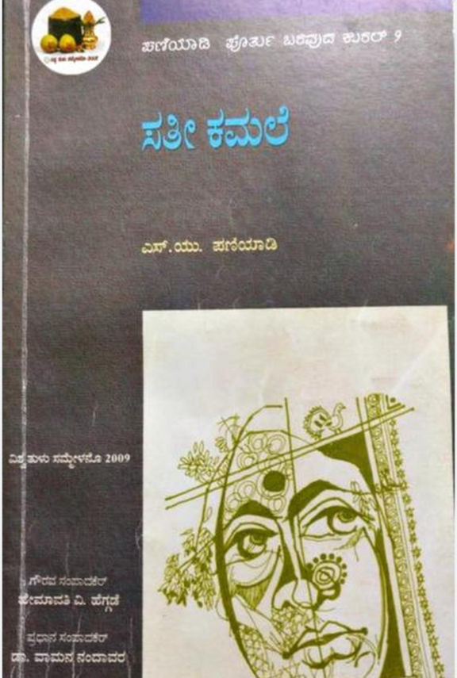

Tuluva Guardian
The Kempagidar Files
Dossier 2026-001: The Economic Assassination of S.U. Paniyadi
I. The Man in the Red Shirt

In the 1920s, Srinivasa Upadhyaya Paniyadi used his signature red shirt to signal total defiance against the "Shudra Bhasha" stigma. Trained in Baroda, he recognized that without a sovereign bank and press, Tuluva culture would be silenced by regional monopolies. He was the intellectual architect of coastal resistance, using satire to dismantle the hierarchy of the time.
II. 1926: The Anthem of a Stolen Land
While Paniyadi built the intellect, B. Monappa Thingalaya provided the soul. In 1926, he composed the Land Anthem—a declaration of geographical sovereignty that defined the historical borders of Tulunadu. This memory has been suppressed for a century by an administrative machine that feared a united Tuluva identity.

III. Sathi Kamale: The Buried Masterpiece

Paniyadi’s novel Sathi Kamale proved Tulu's literary power. It wasn't just a story; it was an intellectual shield. When his institutions were sabotaged, this work was hidden from the mainstream to ensure Tuluvas remained "intellectual orphans." Reclaiming this prose is the first step in our administrative war.
IV. The 60-Year Blackout
Following an engineered bank run, the Tulunadu Press was hijacked and renamed. For 60 years, not a single Tulu book reached the hands of our children. This was not a business failure; it was a deliberate cultural blackout designed to break the linguistic chain between generations.

"We are picking up the pen he was forced to drop, singing the anthem B. Monappa Thingalaya wrote 100 years ago, and reclaiming the press that was stolen from our children."